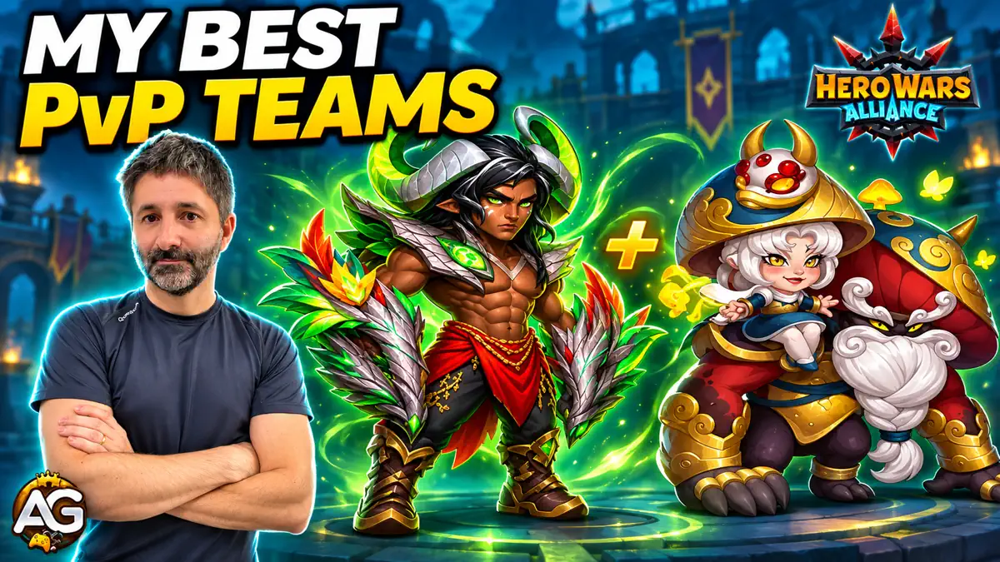

L’équipe avec Wodryn et Mushy que je développerais en premier n’est pas celle que je choisirais pour chaque attaque. Mon premier choix est Guus, Byrna, Yasmine, Mushy et Wodryn si ces héros sont déjà développés. Eva est mon alternative lorsqu’elle est plus forte sur mon compte. Voici comment je choisis entre les six compositions de mes tests PvP.
Regardez ci-dessous mes tests PvP complets avec Wodryn et Mushy. La comparaison des équipes et le guide écrit se trouvent après la vidéo.

Regarder cette vidéo sur YouTube
Dans ce guide
- Pourquoi Wodryn et Mushy fonctionnent bien ensemble
- Quelle équipe choisir ?
- Yasmine : ma première équipe avec Wodryn et Mushy
- Eva : utilisez l’héroïne de dégâts que vous avez déjà
- Miu et Crow : une option d’attaque qui libère Byrna
- Luther et Tristan : Mushy contre le Chaos
- Kayla et Aidan : Wodryn sans Mushy
- Crow et Tristan : une autre option pour les deux modes
- Comment interpréter ces résultats PvP
- Quelle équipe je développerais en premier
Pourquoi Wodryn et Mushy fonctionnent bien ensemble
Wodryn aide à protéger les alliés derrière lui. Il peut supprimer les effets négatifs, augmenter les chances de coup critique et aider l’équipe à subir moins de dégâts. Mushy ajoute une combattante à la première ligne et devient une menace offensive lorsqu’elle dispose de suffisamment de temps et de soins.
Les soins aident ses champignons à devenir actifs et augmentent aussi les dégâts de l’une de ses compétences. C’est pourquoi j’aime l’associer à des soigneurs : l’équipe doit rester en vie assez longtemps pour que les champignons rejoignent le combat et en renversent le cours.
Quelle équipe choisir ?
| Équipe | Héros | Quand je l’utiliserais |
|---|---|---|
| 1 | Guus · Byrna · Yasmine · Mushy · Wodryn | Mon premier choix avec les deux héros ; pour attaquer les défenses testées et comme première candidate à la défense. |
| 2 | Eva · Guus · Byrna · Mushy · Wodryn | Une alternative pour les attaques planifiées lorsqu’Eva est déjà développée. |
| 3 | Miu · Crow · Guus · Mushy · Wodryn | Une autre option d’attaque contre Cleaver et Kendle ; garde Byrna disponible pour une autre équipe de Grande Arène. |
| 4 | Guus · Byrna · Tristan · Mushy · Luther | Une option avec Mushy sans Wodryn pour attaquer des défenses similaires du Chaos. |
| 5 | Aidan · Peech · Guus · Kayla · Wodryn | Une option avec Wodryn sans Mushy pour les comptes qui utilisent déjà Kayla et Aidan. |
| 6 | Guus · Crow · Tristan · Mushy · Wodryn | Une autre option pour l’attaque et la défense, d’après mon expérience. |
1. Yasmine : ma première équipe avec Wodryn et Mushy
 Byrna
Byrna Mushy
Mushy Wodryn
WodrynYasmine inflige des dégâts physiques, tandis que Mushy apporte des dégâts magiques et une pression croissante à mesure que le combat avance. Yasmine n’a pas besoin de faire tout le travail seule. Ses chances de coup critique l’aident aussi à profiter de la réduction des dégâts de Wodryn. Guus et Byrna apportent des soins, ce qui compte également pour les champignons de Mushy.
Cette composition a été très forte contre Cleaver, Byrna, Kendle, Dorian et Aidan. Elle m’a aussi donné de bons résultats contre Julius, Byrna, Crow, Guus et Peech. Ces défenses avaient reçu des investissements différents ; les tests n’étaient donc pas équivalents. Ce qui m’a marqué, c’est que Mushy pouvait aider à terminer les combats même lorsque Yasmine ne survivait pas.
Je garderais cette équipe prête à attaquer ces défenses testées. C’est aussi la première équipe de ce groupe que j’essaierais en défense, mais les victoires en attaque ne démontrent pas à quel point elle résistera en défense.
2. Eva : utilisez l’héroïne de dégâts que vous avez déjà
 Eva
EvaJe choisirais Eva si elle faisait déjà partie de mes héros principaux. Cette version a obtenu d’excellentes séries de résultats contre les deux défenses citées plus haut, y compris avant que je débloque la Relique de Wodryn. Elle a aussi connu des séries plus faibles à mesure que je modifiais sa configuration.
Cela en fait une équipe que j’utiliserais pour une attaque planifiée, après avoir vérifié l’adversaire. L’idée reste de survivre, de faire entrer les champignons de Mushy dans le combat et de donner aux héros de dégâts le temps d’agir.
Si Eva est déjà forte et que Yasmine est faible, j’essaierais cette équipe avant de dépenser des ressources pour Yasmine. Une composition utile avec des héros que je possède peut être un meilleur investissement pour mon compte que de commencer à développer un nouveau héros de dégâts.
3. Miu et Crow : une option d’attaque qui libère Byrna
 Miu
MiuJ’aime cette composition comme autre choix d’attaque contre la défense avec Cleaver et Kendle. Miu a également bien fonctionné avec Mushy dans mes tests séparés : avec Miu, la Cécité augmente les chances de coup critique magique des alliés, ce qui aide Mushy à infliger davantage de dégâts tout en contribuant en première ligne.
Cette équipe laisse aussi Byrna disponible pour une autre composition de Grande Arène. Pour mon compte, je choisirais toujours la version avec Yasmine en premier, mais j’essaierais cette option si Miu et Crow étaient déjà forts.
4. Luther et Tristan : Mushy contre le Chaos
 Tristan
Tristan Luther
LutherCette composition utilise Mushy sans Wodryn. Dans mes tests d’Arène, elle a battu des équipes du Chaos avec des Reliques dorées et plus de 150 000 points de puissance supplémentaires du côté adverse. Elle a aussi fonctionné contre une équipe du Chaos avec Electra. Ce sont des résultats rapportés, pas une promesse contre toutes les compositions du Chaos.
Luther saute au milieu de l’équipe ennemie tandis que Mushy aide à tenir notre première ligne. Je garderais cette option prête pour l’Arène ou une attaque planifiée en Guerre de guildes lorsque je rencontre une défense similaire, et je vérifierais la composition ennemie exacte avant de la choisir.
5. Kayla et Aidan : Wodryn sans Mushy
 Aidan
Aidan Peech
Peech Kayla
KaylaSi Kayla et Aidan font déjà partie de votre équipe principale, voici une autre composition avec Wodryn qui mérite d’être testée avant de développer Mushy de zéro. Contre l’équipe avec Cleaver et Kendle, elle a remporté les dix combats de ce test.
Le résultat s’applique aux conditions de ce test. Voyez-y une raison d’essayer la composition avec vos héros existants, plutôt que de supposer que ce résultat se répétera contre tous les adversaires ou à tous les niveaux d’investissement.
6. Crow et Tristan : une autre option pour les deux modes
Une autre équipe que j’aime est Guus, Crow, Tristan, Mushy et Wodryn. D’après mon expérience, elle fonctionne très bien en attaque comme en défense.
La vidéo ne donne ni nombre de combats ni adversaire précis pour cette version. Je la considérerais comme une autre option à tester avec Crow et Tristan déjà développés, tout en gardant la composition avec Yasmine comme premier choix pour développer Wodryn et Mushy ensemble.
Comment interpréter ces résultats PvP
Les résultats présentés ici proviennent des combats décrits dans ma vidéo. Les défenses ennemies avaient reçu des investissements différents, et la configuration de Wodryn a changé entre certaines séries de tests. La vidéo ne fournit ni configurations complètes, ni niveaux exacts de Relique pour chaque composition, ni conditions de test communes aux six équipes.
Mon premier choix à essayer en défense est la version avec Yasmine. Eva est surtout mon alternative pour les attaques planifiées. Mon expérience me conduit à une appréciation positive de l’équipe avec Crow et Tristan en attaque et en défense, mais cette vidéo donne moins de détails sur ses tests. Gardez ces distinctions à l’esprit lorsque vous choisissez quelle équipe développer.
Quelle équipe je développerais en premier
- Avec Wodryn et Mushy ensemble : commencez par l’équipe avec Yasmine si ces héros sont déjà développés.
- Avec une Eva plus forte : essayez sa version avant d’investir dans Yasmine.
- Contre des défenses similaires du Chaos : gardez l’équipe avec Luther, Tristan et Mushy comme option d’attaque.
- Avec Kayla et Aidan déjà développés : testez leur équipe avec Wodryn avant de commencer à développer Mushy de zéro.
- Pour les comptes free-to-play et les joueurs qui dépensent peu : développez bien une équipe avant d’en commencer une autre.